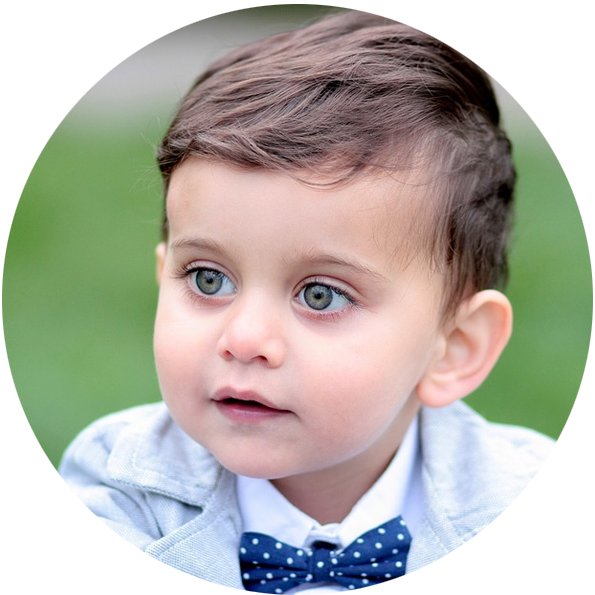
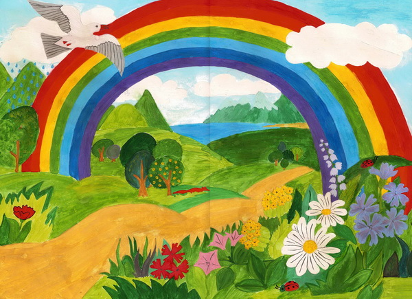

Никита
Дата рождения: 30.03.2015
Никита — открытый, ясный ребенок, он будто светится изнутри, и, глядя на его милую улыбку, все время хочется улыбаться в ответ. Любит булочки с изюмом. У Никиты много друзей, которые знают, что на него можно всегда положиться.
Цвет глаз: голубые
Цвет волос: русые
Возможные формы устройства: опека, усыновление
Характер: дружелюбный, усидчивый, надёжный, скромный
Интересы: рисование
Группа здоровья: 2-ая группа здоровья
Причина отсутствия родительского попечения матери: решение суда о лишении родительских прав матери
Причина отсутствия родительского попечения отца: отец находится в заключении (под стражей)
Братья или сёстры: нет

Рисунок Никиты